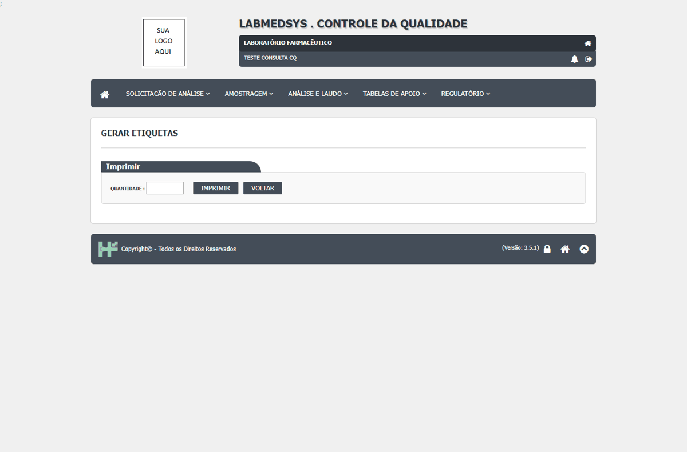

DV-CQ-037 · Perfil sem a permissão de imprimir gera a etiqueta de análise
O usuário só de consulta (perfil sem Imprimir) abriu Gerar Etiqueta › Imprimir e gerou o PDF com duas etiquetas da 017/26. A quantidade 1 é recusada ("Somente números pares. As etiquetas são impressas em pares.").
Como reproduzir o erro, passo a passo
- Entrar com o perfil só de consulta.
- Abrir Gerar Etiqueta, Imprimir a 017/26, quantidade 2.
Esperado
Recusar a gravação (e esconder o botão) para um perfil que só tem a consulta da tela; registrar a tentativa.
Obtido
PDF "ImprimirEtiqueta.pdf" com duas etiquetas (cabeçalho de outra instituição e "Teor: 0.000", DV-CQ-025).
Evidência (captura da tela)

DV-CQ-025 · Relatórios: a etiqueta traz o nome de outra instituição, as datas saem em dois formatos e o boletim de ambiente sai em branco
A **etiqueta** (017/26) tem no alto "LABORATÓRIO QUÍMICO FARMACÊUTICO DA AERONÁUTICA", e o laudo e o boletim dizem "Laboratório Farmacêutico". O **laudo** traz "Validade Laudo: 23/10/2027" e, na mesma folha, "Validade: 10/23/2027" (data americana); o boletim também imprime a data de hoje como "10/23/2026 3:24:50 AM". O **boletim de ambiente** sai com "Data da exposição", "Ambiente avaliado", método, tempo, meios de cultura e as quatro condições (sala vazia, fluxo ligado, ar ligado, sala em atividade) **em branco**, para preencher a mão; a coluna Resultado também sai vazia (DV-CQ-009). A etiqueta com "Teor: 0.000" mostra o teor mesmo quando não é obrigatório.
Como reproduzir o erro, passo a passo
- Em Gerar Etiqueta, clicar no ícone de uma análise com laudo, informar a quantidade 2 e Imprimir.
- Em Emissão Laudo Final, clicar em Imprimir; em Consultar Análise Programada, imprimir uma análise de ambiente.
Esperado
Nome da instituição correto e igual nos documentos; data no mesmo formato; boletim com os dados da coleta.
Obtido
Nome de outra instituição, dois formatos de data e boletim sem dados.
Evidência (captura da tela)